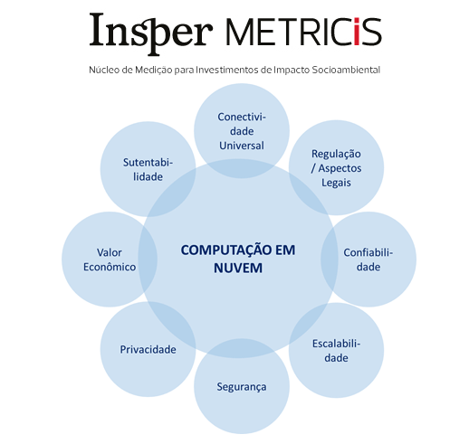

Empresa: Insper Metricis
Cargo: Pesquisador
Período: Jul 2017 - Jul 2017
Descrição: Análise de projetos de implementação de Cloud para o governo federal
Atribuições e Competencias: Pesquisa de serviços de cloud as a service, desenvolvimento de embasamento teorico com analise de beneficios e riscos de uma transição, analise de custo de transição, entrevistas com oficiais do governo e provedores de serviços Cloud e estimativas de gastos para projeto de larga escala